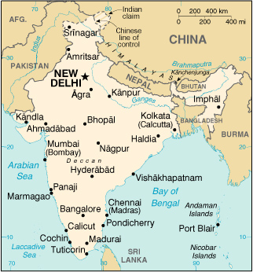

|
India | |
| Introduction Geography People Government Economy Communications Transportation Military Transnational Issues | ||
|  | ||
| India | Introduction | Top of Page |
| Background: | The Indus Valley civilization, one of the oldest in the world, goes back at least 5,000 years. Aryan tribes from the northwest invaded about 1500 B.C.; their merger with the earlier inhabitants created classical Indian culture. Arab incursions starting in the 8th century and Turkish in 12th were followed by European traders beginning in the late 15th century. By the 19th century, Britain had assumed political control of virtually all Indian lands. Nonviolent resistance to British colonialism under Mohandas GANDHI and Jawaharlal NEHRU led to independence in 1947. The subcontinent was divided into the secular state of India and the smaller Muslim state of Pakistan. A third war between the two countries in 1971 resulted in East Pakistan becoming the separate nation of Bangladesh. Fundamental concerns in India include the ongoing dispute with Pakistan over Kashmir, massive overpopulation, environmental degradation, extensive poverty, and ethnic strife, all this despite impressive gains in economic investment and output. |
| India | Geography | Top of Page |
| Location: | Southern Asia, bordering the Arabian Sea and the Bay of Bengal, between Burma and Pakistan |
| Geographic coordinates: | 20 00 N, 77 00 E |
| Map references: | Asia |
| Area: |
total:
3,287,590 sq km
land: 2,973,190 sq km water: 314,400 sq km |
| Area - comparative: | slightly more than one-third the size of the US |
| Land boundaries: |
total:
14,103 km
border countries: Bangladesh 4,053 km, Bhutan 605 km, Burma 1,463 km, China 3,380 km, Nepal 1,690 km, Pakistan 2,912 km |
| Coastline: | 7,000 km |
| Maritime claims: |
contiguous zone:
24 NM
continental shelf: 200 NM or to the edge of the continental margin exclusive economic zone: 200 NM territorial sea: 12 NM |
| Climate: | varies from tropical monsoon in south to temperate in north |
| Terrain: | upland plain (Deccan Plateau) in south, flat to rolling plain along the Ganges, deserts in west, Himalayas in north |
| Elevation extremes: |
lowest point:
Indian Ocean 0 m
highest point: Kanchenjunga 8,598 m |
| Natural resources: | coal (fourth-largest reserves in the world), iron ore, manganese, mica, bauxite, titanium ore, chromite, natural gas, diamonds, petroleum, limestone, arable land |
| Land use: |
arable land:
56%
permanent crops: 1% permanent pastures: 4% forests and woodland: 23% other: 16% (1993 est.) |
| Irrigated land: | 535,100 sq km (1995/96 est.) |
| Natural hazards: | droughts, flash floods, severe thunderstorms common; earthquakes |
| Environment - current issues: | deforestation; soil erosion; overgrazing; desertification; air pollution from industrial effluents and vehicle emissions; water pollution from raw sewage and runoff of agricultural pesticides; tap water is not potable throughout the country; huge and growing population is overstraining natural resources |
| Environment - international agreements: |
party to:
Antarctic-Environmental Protocol, Antarctic-Marine Living Resources, Antarctic Treaty, Biodiversity, Climate Change, Desertification, Endangered Species, Environmental Modification, Hazardous Wastes, Law of the Sea, Nuclear Test Ban, Ozone Layer Protection, Ship Pollution, Tropical Timber 83, Tropical Timber 94, Wetlands, Whaling
signed, but not ratified: none of the selected agreements |
| Geography - note: | dominates South Asian subcontinent; near important Indian Ocean trade routes |
| India | People | Top of Page |
| Population: | 1,029,991,145 (July 2001 est.) |
| Age structure: |
0-14 years:
33.12% (male 175,630,537; female 165,540,672)
15-64 years: 62.2% (male 331,790,850; female 308,902,864) 65 years and over: 4.68% (male 24,439,022; female 23,687,200) (2001 est.) |
| Population growth rate: | 1.55% (2001 est.) |
| Birth rate: | 24.28 births/1,000 population (2001 est.) |
| Death rate: | 8.74 deaths/1,000 population (2001 est.) |
| Net migration rate: | -0.08 migrant(s)/1,000 population (2001 est.) |
| Sex ratio: |
at birth:
1.05 male(s)/female
under 15 years: 1.06 male(s)/female 15-64 years: 1.07 male(s)/female 65 years and over: 1.03 male(s)/female total population: 1.07 male(s)/female (2001 est.) |
| Infant mortality rate: | 63.19 deaths/1,000 live births (2001 est.) |
| Life expectancy at birth: |
total population:
62.86 years
male: 62.22 years female: 63.53 years (2001 est.) |
| Total fertility rate: | 3.04 children born/woman (2001 est.) |
| HIV/AIDS - adult prevalence rate: | 0.7% (1999 est.) |
| HIV/AIDS - people living with HIV/AIDS: | 3.7 million (1999 est.) |
| HIV/AIDS - deaths: | 310,000 (1999 est.) |
| Nationality: |
noun:
Indian(s)
adjective: Indian |
| Ethnic groups: | Indo-Aryan 72%, Dravidian 25%, Mongoloid and other 3% (2000) |
| Religions: | Hindu 81.3%, Muslim 12%, Christian 2.3%, Sikh 1.9%, other groups including Buddhist, Jain, Parsi 2.5% (2000) |
| Languages: |
English enjoys associate status but is the most important language for national, political, and commercial communication, Hindi the national language and primary tongue of 30% of the people, Bengali (official), Telugu (official), Marathi (official), Tamil (official), Urdu (official), Gujarati (official), Malayalam (official), Kannada (official), Oriya (official), Punjabi (official), Assamese (official), Kashmiri (official), Sindhi (official), Sanskrit (official), Hindustani (a popular variant of Hindi/Urdu spoken widely throughout northern India)
note: 24 languages each spoken by a million or more persons; numerous other languages and dialects, for the most part mutually unintelligible |
| Literacy: |
definition:
age 15 and over can read and write
total population: 52% male: 65.5% female: 37.7% (1995 est.) |
| India | Government | Top of Page |
| Country name: |
conventional long form:
Republic of India
conventional short form: India |
| Government type: | federal republic |
| Capital: | New Delhi |
| Administrative divisions: | 28 states and 7 union territories*; Andaman and Nicobar Islands*, Andhra Pradesh, Arunachal Pradesh, Assam, Bihar, Chandigarh*, Chhattisgarh, Dadra and Nagar Haveli*, Daman and Diu*, Delhi*, Goa, Gujarat, Haryana, Himachal Pradesh, Jammu and Kashmir, Jharkhand, Karnataka, Kerala, Lakshadweep*, Madhya Pradesh, Maharashtra, Manipur, Meghalaya, Mizoram, Nagaland, Orissa, Pondicherry*, Punjab, Rajasthan, Sikkim, Tamil Nadu, Tripura, Uttaranchal, Uttar Pradesh, West Bengal |
| Independence: | 15 August 1947 (from UK) |
| National holiday: | Republic Day, 26 January (1950) |
| Constitution: | 26 January 1950 |
| Legal system: | based on English common law; limited judicial review of legislative acts; accepts compulsory ICJ jurisdiction, with reservations |
| Suffrage: | 18 years of age; universal |
| Executive branch: |
chief of state:
President Kicheril Raman NARAYANAN (since 25 July 1997); Vice President Krishnan KANT (since 21 August 1997)
head of government: Prime Minister Atal Behari VAJPAYEE (since 19 March 1998) cabinet: Council of Ministers appointed by the president on the recommendation of the prime minister elections: president elected by an electoral college consisting of elected members of both houses of Parliament and the legislatures of the states for a five-year term; election last held 14 July 1997 (next to be held NA July 2002); vice president elected by both houses of Parliament for a five-year term; election last held 16 August 1997 (next to be held NA August 2002); prime minister elected by parliamentary members of the majority party following legislative elections; election last held NA October 1999 (next to be held NA October 2004) election results: Kicheril Raman NARAYANAN elected president; percent of electoral college vote - NA%; Krishnan KANT elected vice president; percent of Parliament vote - NA%; Atal Behari VAJPAYEE elected prime minister; percent of vote - NA% |
| Legislative branch: |
bicameral Parliament or Sansad consists of the Council of States or Rajya Sabha (a body consisting of not more than 250 members, up to 12 of which are appointed by the president, the remainder are chosen by the elected members of the state and territorial assemblies; members serve six-year terms) and the People's Assembly or Lok Sabha (545 seats; 543 elected by popular vote, 2 appointed by the president; members serve five-year terms)
elections: People's Assembly - last held 5 September through 3 October 1999 (next to be held NA 2004) election results: People's Assembly - percent of vote by party - BJP alliance 40.8%, Congress alliance 33.8%, other 25.4%; seats by party - BJP alliance 304, Congress alliance 134, other 107 |
| Judicial branch: | Supreme Court (judges are appointed by the president and remain in office until they reach the age of 65) |
| Political parties and leaders: | All India Anna Dravida Munnetra Kazhagam or AIADMK [C. Jayalalitha JAYARAM]; All India Forward Bloc or AIFB [Prem Dutta PALIWAL (chairman), Chitta BASU (general secretary)]; Asom Gana Parishad [Prafulla Kumar MAHANTA]; Bahujan Samaj Party or BSP [Kanshi RAM]; Bharatiya Janata Party or BJP [Bangaru LAXMAN, president]; Biju Janata Dal or BJD [Naveen PATNAIK]; Communist Party of India or CPI [Ardhendu Bhushan BARDHAN]; Communist Party of India/Marxist-Leninist or CPI/ML [Vinod MISHRA]; Congress (I) Party [Sonia GANDHI, president]; Dravida Munnetra Kazagham or DMK (a regional party in Tamil Nadu) [M. KARUNANIDHI]; Indian National League [Suliaman SAIT]; Janata Dal (Secular) [H. D. Deve GOWDA]; Janata Dal (United) or JDU [Sharad YADAV, president, I. K. GUJRAL]; Kerala Congress (Mani faction) [K. M. MANI]; Marumalarchi Dravida Munnetra Kazhagam or MDMK [VAIKO]; Muslim League [G. M. BANATWALA]; Nationalist Congress Party or NCP [Sharad PAWAR]; National Democratic Alliance, a 16-party alliance including BJP, DMK, Janata Dal (U), SHS, Shiromani Akali Dal, Telugu Desam, BJD, Rinamool Congress]; Rashtriya Janata Dal or RJD [Laloo Prasad YADAV]; Revolutionary Socialist Party or RSP [Tridip CHOWDHURY]; Samajwadi Party or SP [Mulayam Singh YADAV, president]; Shiromani Akali Dal [Prakash Singh BADAL]; Shiv Sena [Bal THACKERAY]; Tamil Maanila Congress [G. K. MOOPANAR]; Telugu Desam Party or TDP (a regional party in Andhra Pradesh) [Chandrababu NAIDU]; Trinamool Congress [Mamata BANERJEE] |
| Political pressure groups and leaders: | numerous religious or militant/chauvinistic organizations, including Vishwa Hindu Parishad, Bajrang Dal, and Rashtriya Swayamsevak Sangh; various separatist groups seeking greater communal and/or regional autonomy, including the All Parties Hurriyat Conference |
| International organization participation: | AfDB, ARF (dialogue partner), AsDB, ASEAN (dialogue partner), BIS, C, CCC, CP, ESCAP, FAO, G- 6, G-15, G-19, G-24, G-77, IAEA, IBRD, ICAO, ICC, ICFTU, ICRM, IDA, IEA (observer), IFAD, IFC, IFRCS, IHO, ILO, IMF, IMO, Inmarsat, Intelsat, Interpol, IOC, IOM (observer), ISO, ITU, MINURSO, MIPONUH, MONUC, NAM, OAS (observer), OPCW, PCA, SAARC, UN, UNCTAD, UNESCO, UNHCR, UNIDO, UNIFIL, UNIKOM, UNMEE, UNMIBH, UNMIK, UNU, UPU, WCL, WFTU, WHO, WIPO, WMO, WToO, WTrO |
| Diplomatic representation in the US: |
chief of mission:
Ambassador Naresh CHANDRA
chancery: 2107 Massachusetts Avenue NW, Washington, DC 20008; note - Embassy located at 2536 Massachusetts Avenue NW, Washington, DC 20008 telephone: [1] (202) 939-7000 FAX: [1] (202) 483-3972 consulate(s) general: Chicago, Houston, New York, and San Francisco |
| Diplomatic representation from the US: |
chief of mission:
Ambassador Richard F. CELESTE
embassy: Shantipath, Chanakyapuri, New Delhi 110021 mailing address: use embassy street address telephone: [91] (11) 688-9033, 611-3033 FAX: [91] (11) 419-0025 consulate(s) general: Chennai (Madras), Kolkata (Calcutta), Mumbai (Bombay) |
| Flag description: | three equal horizontal bands of orange (top), white, and green with a blue chakra (24-spoked wheel) centered in the white band; similar to the flag of Niger, which has a small orange disk centered in the white band |
| India | Economy | Top of Page |
| Economy - overview: | India's economy encompasses traditional village farming, modern agriculture, handicrafts, a wide range of modern industries, and a multitude of support services. More than a third of the population is too poor to be able to afford an adequate diet. India's international payments position remained strong in 2000 with adequate foreign exchange reserves, moderately depreciating nominal exchange rates, and booming exports of software services. Growth in manufacturing output slowed, and electricity shortages continue in many regions. |
| GDP: | purchasing power parity - $2.2 trillion (2000 est.) |
| GDP - real growth rate: | 6% (2000 est.) |
| GDP - per capita: | purchasing power parity - $2,200 (2000 est.) |
| GDP - composition by sector: |
agriculture:
25%
industry: 24% services: 51% (2000) |
| Population below poverty line: | 35% (1994 est.) |
| Household income or consumption by percentage share: |
lowest 10%:
3.5%
highest 10%: 33.5% (1997) |
| Inflation rate (consumer prices): | 5.4% (2000 est.) |
| Labor force: | NA |
| Labor force - by occupation: | agriculture 67%, services 18%, industry 15% (1995 est.) |
| Unemployment rate: | NA% |
| Budget: |
revenues:
$44.3 billion
expenditures: $73.6 billion, including capital expenditures of $NA (FY00/01 est.) |
| Industries: | textiles, chemicals, food processing, steel, transportation equipment, cement, mining, petroleum, machinery, software |
| Industrial production growth rate: | 7.5% (2000 est.) |
| Electricity - production: | 454.561 billion kWh (1999) |
| Electricity - production by source: |
fossil fuel:
79.41%
hydro: 17.77% nuclear: 2.52% other: 0.3% (1999) |
| Electricity - consumption: | 424.032 billion kWh (1999) |
| Electricity - exports: | 200 million kWh (1999) |
| Electricity - imports: | 1.49 billion kWh (1999) |
| Agriculture - products: | rice, wheat, oilseed, cotton, jute, tea, sugarcane, potatoes; cattle, water buffalo, sheep, goats, poultry; fish |
| Exports: | $43.1 billion (f.o.b., 2000) |
| Exports - commodities: | textile goods, gems and jewelry, engineering goods, chemicals, leather manufactures |
| Exports - partners: | US 22%, UK 6%, Germany 5%, Japan 5%, Hong Kong 5%, UAE 4% (1999) |
| Imports: | $60.8 billion (f.o.b., 2000) |
| Imports - commodities: | crude oil, machinery, gems, fertilizer, chemicals |
| Imports - partners: | US 9%, Benelux 8%, UK 6%, Saudi Arabia 6%, Japan 6%, Germany 5% (1999) |
| Debt - external: | $99.6 billion (2000) |
| Economic aid - recipient: | $2.9 billion (FY98/99) |
| Currency: | Indian rupee (INR) |
| Currency code: | INR |
| Exchange rates: | Indian rupees per US dollar - 46.540 (January 2001), 44.942 (2000), 43.055 (1999), 41.259 (1998), 36.313 (1997), 35.433 (1996) |
| Fiscal year: | 1 April - 31 March |
| India | Communications | Top of Page |
| Telephones - main lines in use: | 27.7 million (October 2000) |
| Telephones - mobile cellular: | 2.93 million (November 2000) |
| Telephone system: |
general assessment:
mediocre service; local and long distance service provided throughout all regions of the country, with services primarily concentrated in the urban areas; major objective is to continue to expand and modernize long-distance network in order to keep pace with rapidly growing number of local subscriber lines; steady improvement is taking place with the recent admission of private and private-public investors, but, with telephone density at about two for each 100 persons and a waiting list of over 2 million, demand for main line telephone service will not be satisfied for a very long time
domestic: local service is provided by microwave radio relay and coaxial cable, with open wire and obsolete electromechanical and manual switchboard systems still in use in rural areas; starting in the 1980s, a substantial amount of digital switch gear has been introduced for local and long-distance service; long-distance traffic is carried mostly by coaxial cable and low-capacity microwave radio relay; since 1985 significant trunk capacity has been added in the form of fiber-optic cable and a domestic satellite system with 254 earth stations; mobile cellular service is provided in four metropolitan cities international: satellite earth stations - 8 Intelsat (Indian Ocean) and 1 Inmarsat (Indian Ocean region); nine gateway exchanges operating from Mumbai (Bombay), New Delhi, Kolkata (Calcutta), Chennai (Madras), Jalandhar, Kanpur, Gaidhinagar, Hyderabad, and Ernakulam; 4 submarine cables - LOCOM linking Chennai (Madras) to Penang; Indo-UAE-Gulf cable linking Mumbai (Bombay) to Al Fujayrah, UAE; India-SEA-ME-WE-3, SEA-ME-WE-2 with landing sites at Cochin and Mumbai (Bombay); Fiber-Optic Link Around the Globe (FLAG) with landing site at Mumbai (Bombay) (2000) |
| Radio broadcast stations: | AM 153, FM 91, shortwave 68 (1998) |
| Radios: | 116 million (1997) |
| Television broadcast stations: | 562 (of which 82 stations have 1 kW or greater power and 480 stations have less than 1 kW of power) (1997) |
| Televisions: | 63 million (1997) |
| Internet country code: | .in |
| Internet Service Providers (ISPs): | 43 (2000) |
| Internet users: | 4.5 million (2000) |
| India | Transportation | Top of Page |
| Railways: |
total:
62,915 km (12,307 km electrified; 12,617 km double track)
broad gauge: 40,620 km 1.676-m gauge narrow gauge: 18,501 km 1.000-m gauge; 3,794 km 0.762-m and 0.610-m gauge (1998 est.) |
| Highways: |
total:
3,319,644 km
paved: 1,517,077 km unpaved: 1,802,567 km (1996) |
| Waterways: |
16,180 km
note: 3,631 km navigable by large vessels |
| Pipelines: | crude oil 3,005 km; petroleum products 2,687 km; natural gas 1,700 km (1995) |
| Ports and harbors: | Chennai (Madras), Cochin, Jawaharal Nehru, Kandla, Kolkata (Calcutta), Mumbai (Bombay), Vishakhapatnam |
| Merchant marine: |
total:
315 ships (1,000 GRT or over) totaling 6,433,831 GRT/10,691,973 DWT
ships by type: bulk 117, cargo 70, chemical tanker 15, combination bulk 1, combination ore/oil 3, container 15, liquefied gas 9, passenger/cargo 5, petroleum tanker 76, short-sea passenger 2, specialized tanker 2 (2000 est.) |
| Airports: | 337 (2000 est.) |
| Airports - with paved runways: |
total:
235
over 3,047 m: 13 2,438 to 3,047 m: 48 1,524 to 2,437 m: 81 914 to 1,523 m: 77 under 914 m: 16 (2000 est.) |
| Airports - with unpaved runways: |
total:
102
2,438 to 3,047 m: 1 1,524 to 2,437 m: 6 914 to 1,523 m: 40 under 914 m: 55 (2000 est.) |
| Heliports: | 16 (2000 est.) |
| India | Military | Top of Page |
| Military branches: | Army, Navy (including naval air arm), Air Force, various security or paramilitary forces (includes Border Security Force, Assam Rifles, Rashtriya Rifles, and National Security Guards) |
| Military manpower - military age: | 17 years of age |
| Military manpower - availability: | males age 15-49: 280,204,502 (2001 est.) |
| Military manpower - fit for military service: | males age 15-49: 164,410,461 (2001 est.) |
| Military manpower - reaching military age annually: | males: 10,879,384 (2001 est.) |
| Military expenditures - dollar figure: | $13.02 billion (FY01) |
| Military expenditures - percent of GDP: | 2.5% (FY00) |
| India | Transnational Issues | Top of Page |
| Disputes - international: | boundary with China in dispute; status of Kashmir with Pakistan; water-sharing problems with Pakistan over the Indus River (Wular Barrage); a portion of the boundary with Bangladesh is indefinite; exchange of 151 enclaves along border with Bangladesh subject to ratification by Indian parliament; dispute with Bangladesh over New Moore/South Talpatty Island |
| Illicit drugs: | world's largest producer of licit opium for the pharmaceutical trade, but an undetermined quantity of opium is diverted to illicit international drug markets; transit country for illicit narcotics produced in neighboring countries; illicit producer of hashish and methaqualone |
{kind=link}